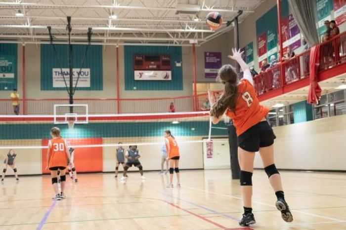

This is a common volleyball style people are playing nowadays. Indoor volleyball required team to have 6 players. Indoor volleyball is the most fast-paced volleyball games, It required player to be alert and great teamwork. The net height for indoor volleyball is 2.43 m which is quite tall.